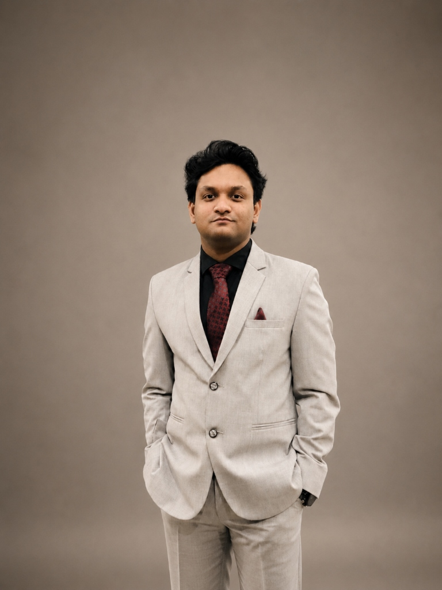

About
Usama Rafid
Bridging the gap between Classroom and Newsroom.
Usama Rafid is a lecturer and journalist based in Dhaka. His work spans academic teaching, field reporting, and research, broadly concerned with how media and journalism functions, struggles, and adapts across Bangladesh and South Asia.

The Journey of the Word
Usama Rafid grew up in Khulna and studied Mass Communication and Journalism at the University of Dhaka, where he completed both his BSS and MSS, earning academic performance scholarships over multiple years.
He spent over five years at Roar Bangladesh writing and producing content before moving into feature journalism at The Business Standard, where he reported on local communities, media economics, and the changing news landscape. He has also worked as a researcher at BRAC Institute of Governance and Development (BIGD) and the Press Institute Bangladesh (PIB), where his work focused on information disorder and media analysis.
Today, Usama teaches at the University of Liberal Arts Bangladesh (ULAB), where he works with students on journalism practice, media theory, and environmental communication. His research sits across journalism studies, media economics, and the sociology of news, with a particular interest in how journalism survives and adapts in Bangladesh and South Asia.
Parallel Evolutions
A scrollable view of how Usama Rafid's academic formation and professional work developed side by side across newsrooms, research institutions, and the classroom.
Interactive Exploration
Click on any milestone block above to load the detailed history, core duties, and evolution profile of that specific role.
Role Title
Organization
assignment Core Duties & Focus Areas
stars Acquired Skills
Curriculum Vitae
A complete record of academic qualifications, professional work, publications, fellowships, and skills, available as a downloadable PDF.
PDF Document
CV — Usama Rafid
Last updated: 2026 · For academic inquiries, write to usama.rafid@ulab.edu.bd